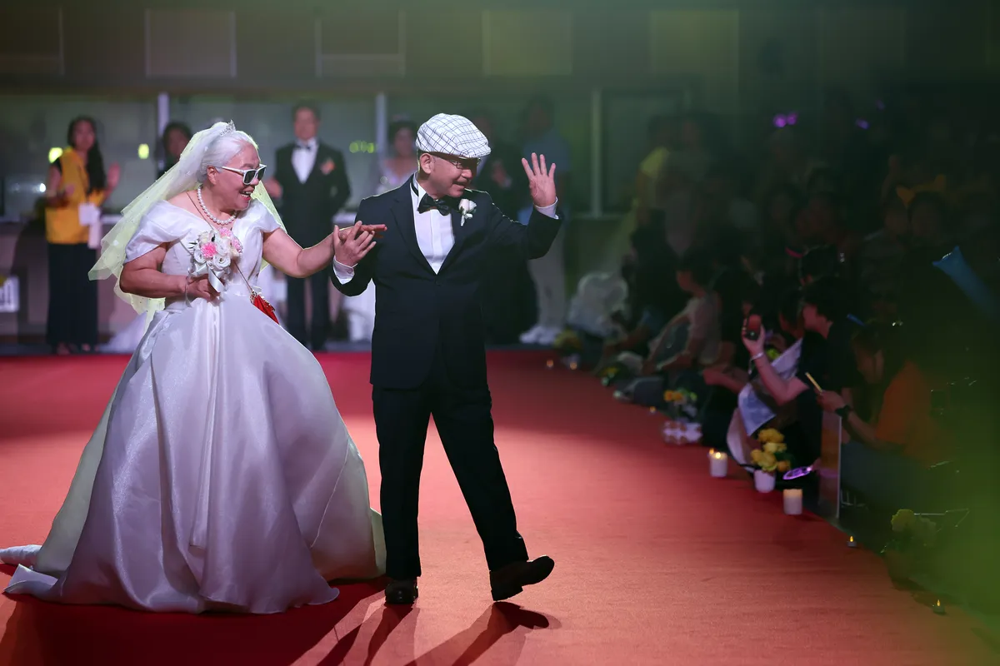
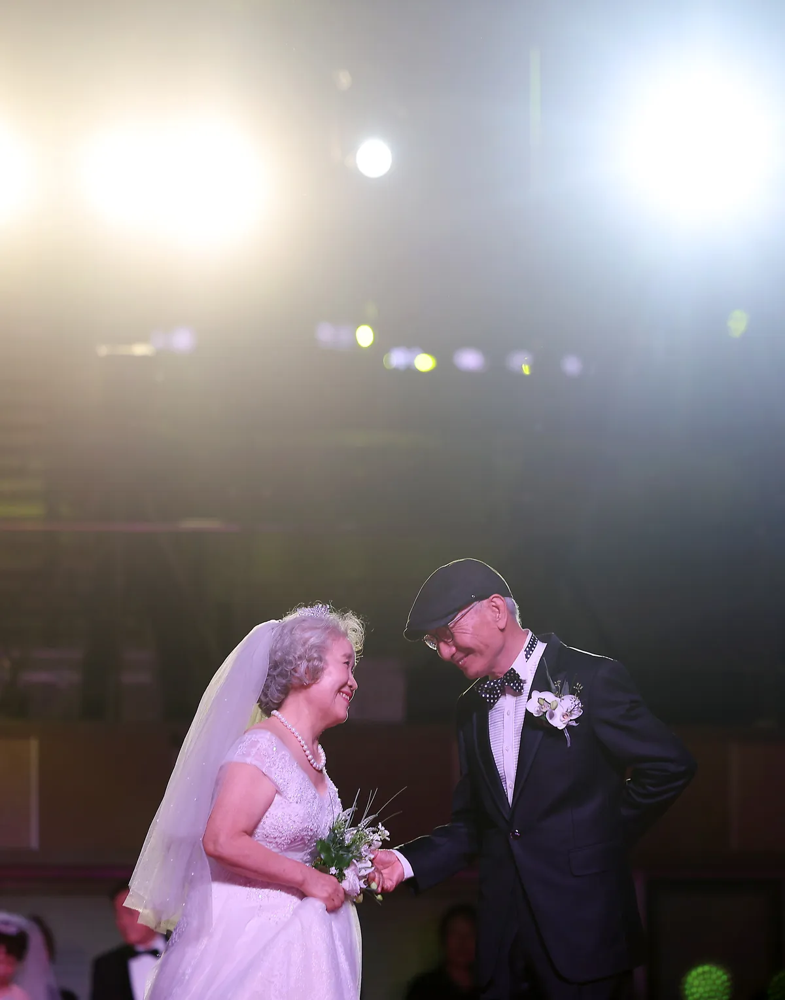
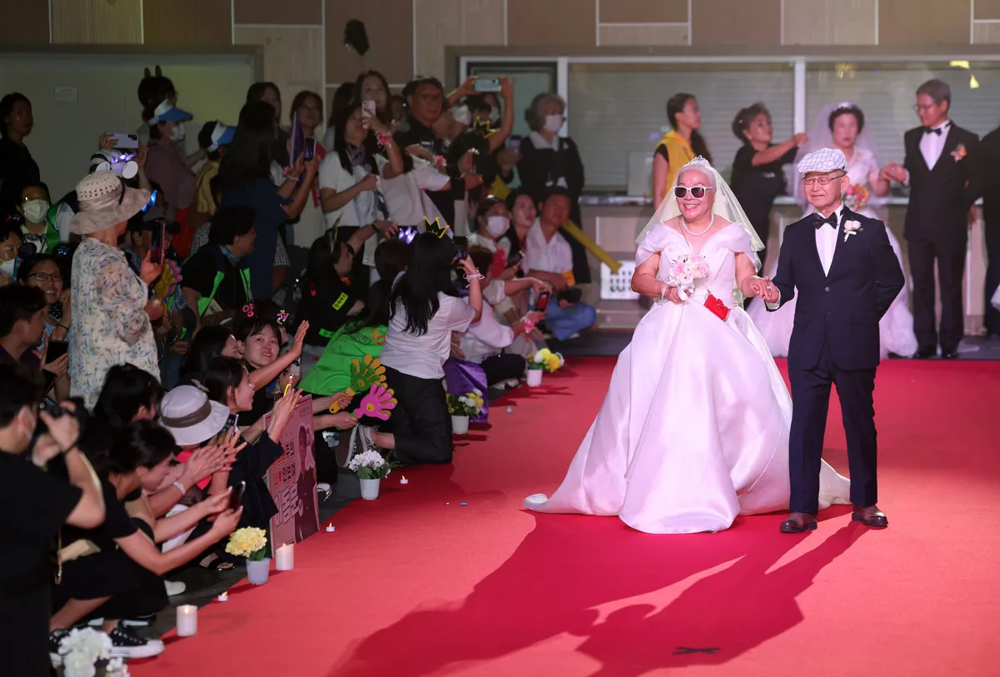
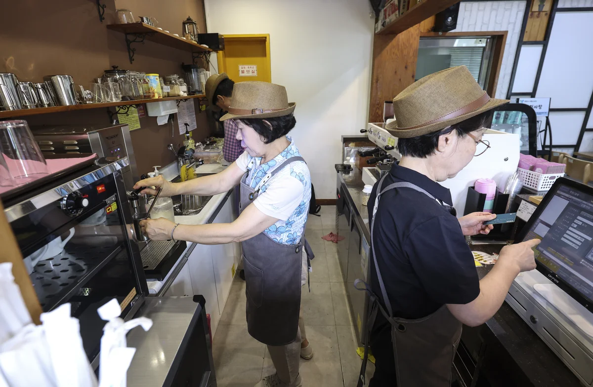
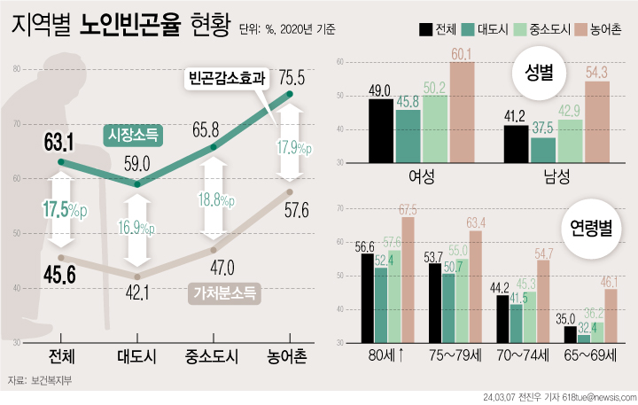

편집#011
<보기>보다 젊으시네요.

편집#011
<보기>보다 젊으시네요.
천만에요가 아닌
천만예요
대한민국 인구 중
65세 이상, 천만 명.
2025년, 대한민국의 65세 이상 인구는 처음으로 1051만 4000명을 넘었습니다.
전체 인구의 20.3%로, 5년 전인 2020년의 15.7%에서
빠르게 늘어난 수치입니다.
2036년에는 30%,
2050년에는 40%를
넘어설 것으로 전망됩니다.
통계청 '2025 고령자통계'
달라지는 인구 구성
65세 이상 1명당 15~64세 인구
통계청 '2025 고령자통계'
표는 연령별 인구 비율이며, 실제 부양 관계를 뜻하지 않습니다.
노년부양비의 역수를 소수 첫째 자리로 반올림했습니다.
65세 이상에서도
나이대는 나뉩니다.
통계청 '2025 고령자통계'
모두를
고령으로 치부할 문제일까요?
그 기준은 누가 세울까요?
<보기>에서 고르시오.
눈금을 짚거나 움직여 당신의 기준을 놓아보세요. 키보드는 방향키로 1세, Page Up과 Page Down으로 5세, Home과 End로 양 끝을 선택합니다.
당신이 놓은 기준
과연, 그럴까요?

당신, 여전히 아름답소사진 뉴시스·김명년 기자

황혼의 런웨이사진 뉴시스·김명년 기자
압구정 거리가 런웨이로사진 뉴시스·조성우 기자
<보기>에 당신의 나이를 입력하시오.
이제, 당신 차례입니다
<보기>에서 당신이 사는 지역을 고르시오.
당신이 고른 지역
당신은 앞서 <보기>에서
—세부터 '고령'이라고 대답했습니다.
과연, 그럴까요?
참고 · 공식 기준(65세 이상)으로 본 전국 비교
내 자리 찾기
막대의 가로 폭은 연령 구간의 길이, 세로 높이는 그 구간의 인구밀도(연령 1살당 비율)입니다. 폭과 높이를 곱한 면적이 실제 인구 비율에 해당합니다. '75세+'는 열린 구간이라 편의상 100세에서 끊어 표시했습니다. 각 구간 비율은 반올림값이라 합계는 100%가 되지 않을 수 있습니다.
(국가데이터처 장래인구추계·통계청 '2025 고령자통계')

기준은 저마다 달라도
누군가는 일을 이어가고,
누군가는 돌봄을 맡습니다.
일상에 도움이 필요한 사람도 있습니다.
2023년 기준 66세 이상 인구의 상대적 빈곤율은 39.8%.
나이가 같아도 노후의 형편까지 같지는 않습니다.
통계청 '2025 고령자통계' · 뉴시스
노후의 형편은 사는 곳과 나이에 따라서도 달랐습니다.

일을 계속하고 싶은 사람에게는 기회가,
도움이 필요한 사람에게는 지원이 충분할까요?
당신은 —세부터를 '고령'이라고 답했습니다.
함께 쓰는 <보기>
그 나이의 우리에게도
각자의 무대가 있기를.
당신은 어떻게 나이 들고 싶나요?